WEBSITE · VERSIÓN 02 · NOVIEMBRE 2026
Sistema
de diseño.
La emoción ocupa el fondo.
La interfaz deja respirar.
Una identidad clara.
Neutros dominantes, rubí puntual y la firma original. La fotografía pone la energía.
#F5F2ECCatálogo y texto sobre oscuro#201D1ETexto, paneles y estructura#8C242BAcciones y acentosTIPOGRAFÍA
Títulos grandes, peso contenido y espaciado cerrado. Texto de lectura con aire. La firma permanece como imagen original.
NEUTROS DE APOYO
#191516#E8E4DD#68615E#6F1B22Contraste sólido: tinta/marfil 14.96:1 · marfil/rubí 7.82:1.
Sobre fotografía, comprobar cada recorte y oscurecimiento.
Un escenario que invita a seguir.
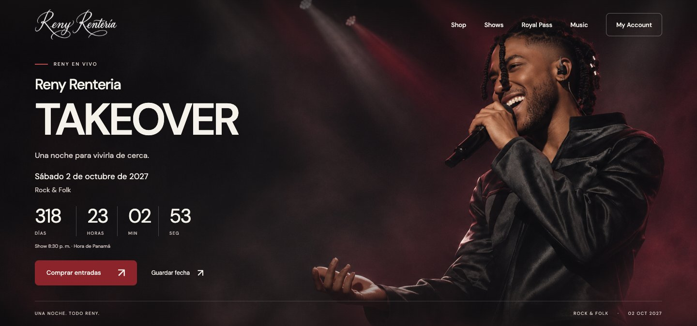
Título, fecha, contador y acciones en HTML, sobre un fondo continuo.
El contenido define el alto. La siguiente sección se alcanza sin una pantalla vacía.
Móvil usa su propia composición para mantener el rostro y la lectura.
Capturas reales de /newlanding. El contador es una instantánea. Las alturas pueden crecer con el contenido o al ampliar el texto.
Suave en los controles.
Abierto en el contenido.
ACCIÓN PRINCIPAL
Rubí / marfil · radio 8px · sin sombra · 52px de alto
FOCO VISIBLE SOBRE CLARO
Ver toda la tienda ↗Contorno 2px · separación 6px · rubí sobre marfil
Muestras de apariencia, sin acciones. En móvil la primaria mide 50px; el botón del banner y los enlaces secundarios, 48px.
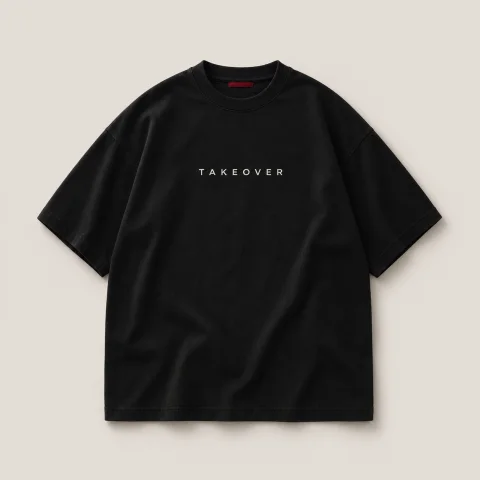
Imagen cuadrada, esquinas rectas y texto fuera de la foto. Sin caja ni sombra alrededor.
La tarjeta permanece abierta.
«Ver pieza» forma parte del enlace completo. El diálogo cierra con Escape y devuelve el foco.
Nueve piezas. Un mismo espíritu.
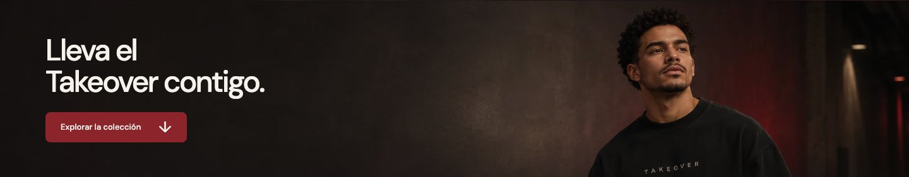
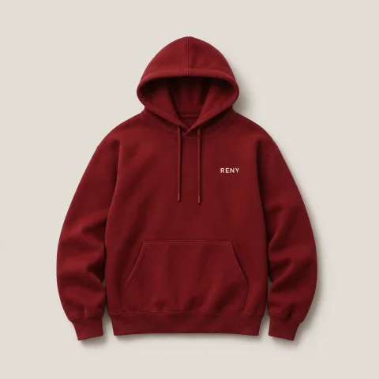
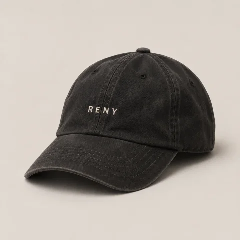
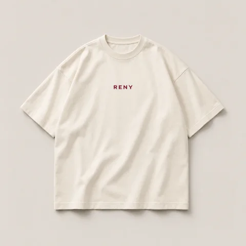
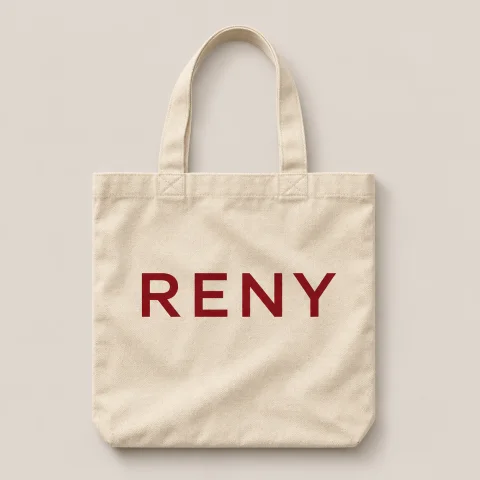
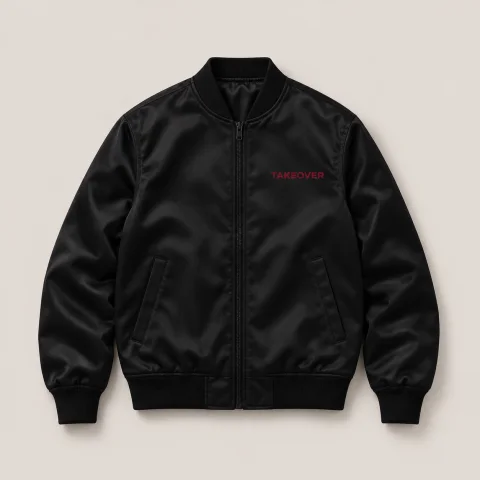
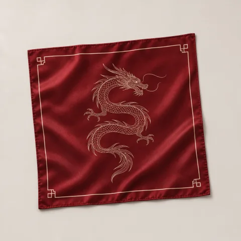
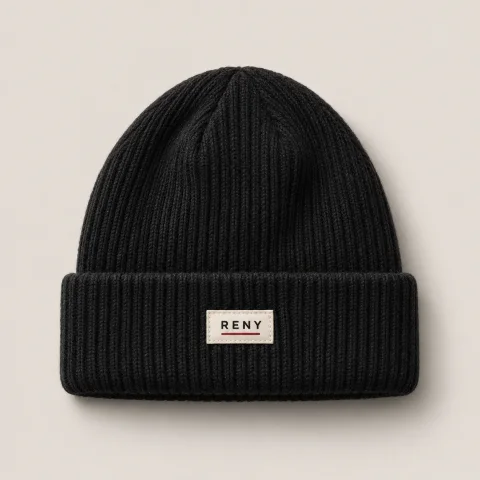
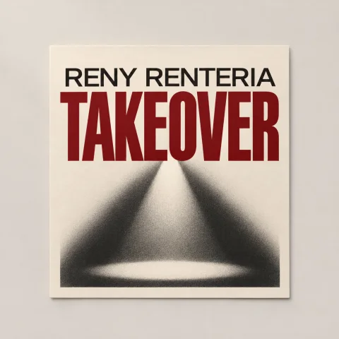
BANNER COMPACTO
Alturas mínimas. Un título y una acción, sobre la zona oscura de la imagen.
3 columnas → 2
Hasta 700px se muestran dos columnas. La novena pieza queda centrada.
«Explorar la colección» baja a las piezas. «Ver toda la tienda» abre Shop.
Piezas, nombres y fotografías provisionales. La composición aprobada no confirma productos, precios ni disponibilidad.
Del otro lado del escenario.
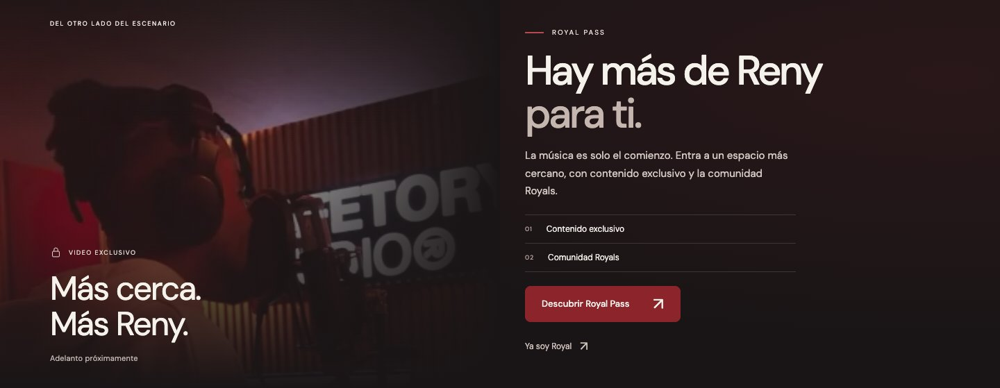
Retrato real de Reny grabando, tonos cálidos y fundido hacia tinta. En móvil, la imagen va arriba.
Contenido exclusivo y comunidad Royals. Descubrir Royal Pass como acción principal; Ya soy Royal como acceso.
El adelanto aún es una imagen con «Próximamente». El video real y sus condiciones se incorporan al estar listos.
Cada destino, en su lugar.
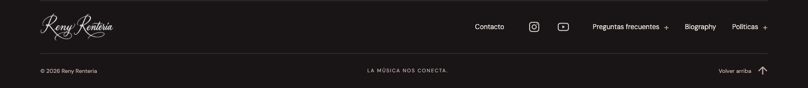
El sistema, listo para continuar.
REGLAS QUE VIAJAN
La misma claridad en todo el sitio.
Marfil para catálogo, lectura y compras. Tinta para texto. Rubí para la acción principal. DM Sans, controles de 8px, foco visible y tarjetas abiertas.
Usar fotografía integrada donde aporte contexto. Mantener rutas, datos, cuentas y pagos existentes al adaptar otras páginas.
Comportamiento adaptable
Margen de 24px en móvil y 20px hasta 359px. Cuadrícula de dos columnas hasta 700px. Menú móvil hasta 900px. El texto puede crecer sin recortes.
Movimiento reducido: sin zoom, transiciones ni desplazamiento suave. Contraste y estados reales se revisan por componente.
ESTADO DE ESTA EDICIÓN
Actualizado desde /newlanding.
Incluye arte integrado, secciones compactas, banner corto, colección, Royal Pass, menú y redes con iconos.
El inicio actual todavía no se reemplaza. El modo «último lanzamiento» está acordado, pero aún no implementado. Las demás páginas conservan su diseño hasta migrarlas.
9 anchos entre 320 y 1440px: imágenes cargadas y sin desbordes. Menú, vista de producto, Escape, foco y movimiento reducido comprobados.
No incluye compras, acceso autenticado ni auditoría completa de accesibilidad.
Fuente: /newlanding · 7c03de2 · 17 nov 2026. Los valores del kit no se aplican automáticamente al website.